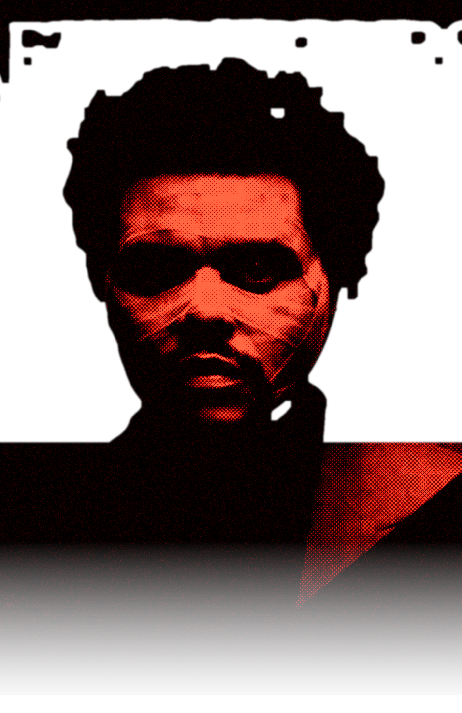

AFTER HOURS
THE WEEKND · 2020
Well, I don't wanna touch the sky no more
I just wanna feel the ground when I'm coming down
It's been way too long
And been way too long
And I don't even wanna get high no more
Just want it out of my life
[ Heartless — your lines here ]